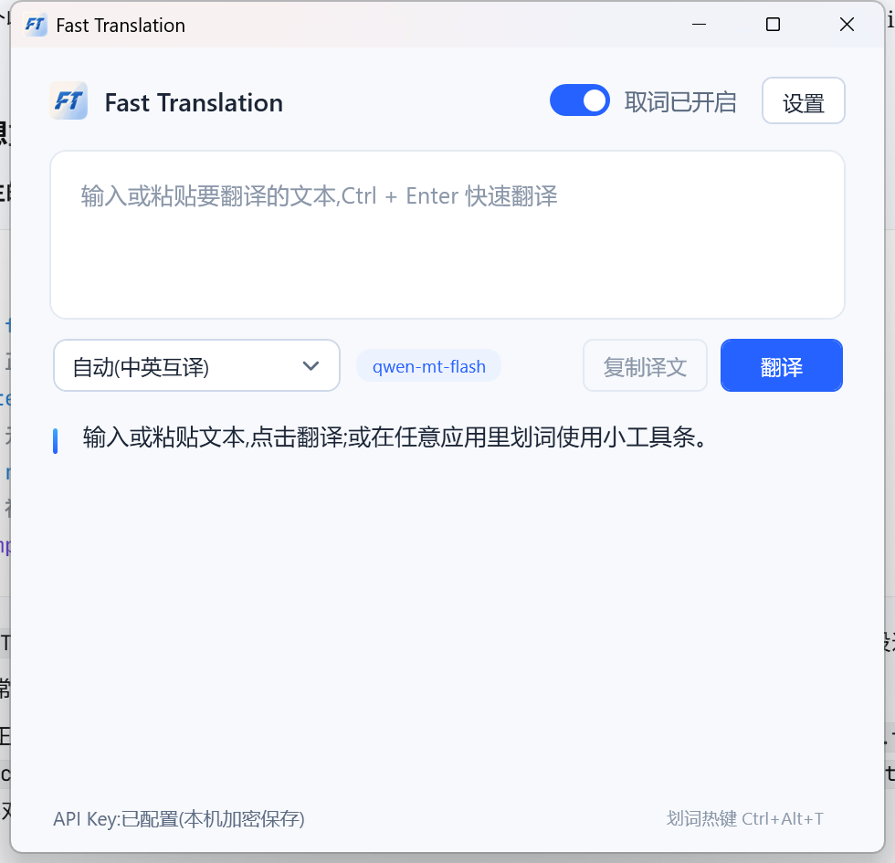
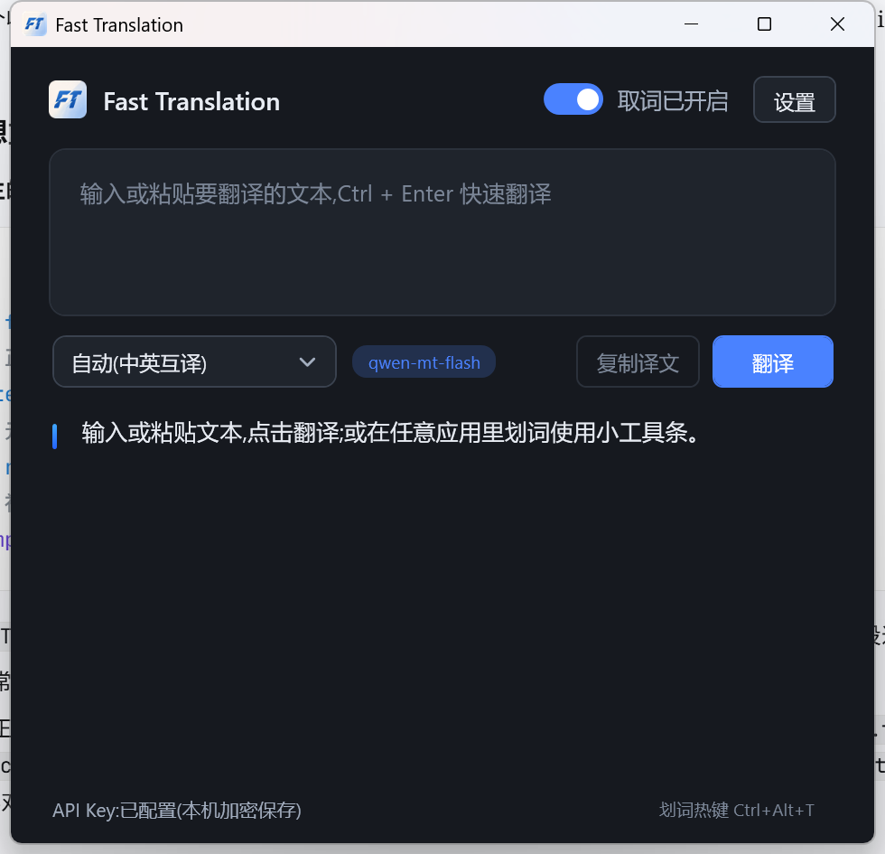
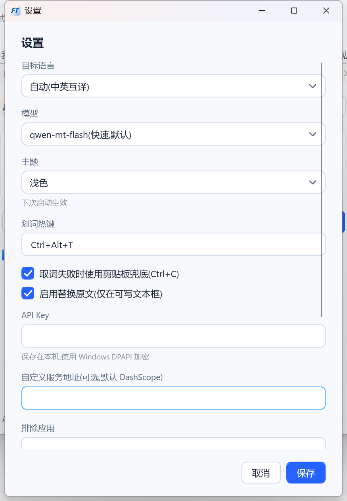
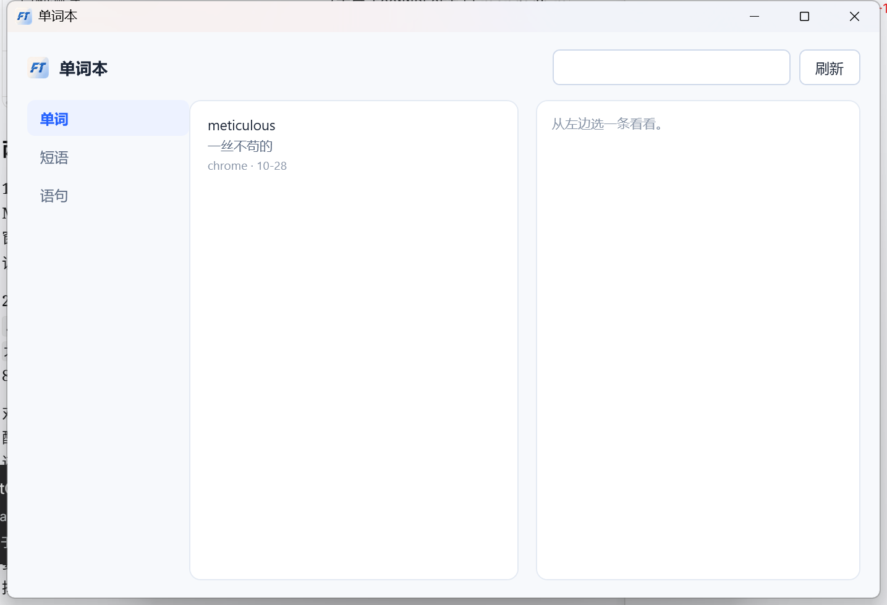

Selected text never leaves its paragraph — it stays highlighted in place
选中的文字从不离开它所在的段落——译文就开在它下面,它一直留在原地被高亮着。
01 / 交互一颗工具条,三个动作
工具条只在你选中文字之后出现,离开就消失。三个按钮对应三种最常做的事,顺序按用得多少排。
工具条由 Win32 分层窗口绘制,不抢焦点,所以它浮在 PDF、IDE、Office、浏览器上时,底下的选区不会消失。
复制
只复制,不翻译。有些文本你只是想拿去别处用。
翻译
译完可直接「替换原文」或「插入译文」,写回靠模拟输入,不改剪贴板内容。
截图翻译
框一块屏幕区域,出译图。用于图片、扫描件、游戏与视频字幕。
02 / 界面没有主界面哲学
主窗口只在你想手动翻译时打开。日常使用中,你看到的是工具条、结果卡、和一个托盘图标。
配色跟系统深浅色走。浅色 #F7F9FC / 白 / #2562FF,深色 #16191F / #1F242C / #4A82FF。




03 / 实测数字来自真实请求
下面这些不是宣传口径,是开发机上跑真实翻译接口记录下来的值。
测量方式:客户端记录 Environment.TickCount64 差值;token 与环境来自服务端记账表 usage_events。
- 单次翻译耗时
- 531毫秒,短句 en→zh,走开发者网关 + qwen-mt-flash
- 每次请求 token
- 65约 60 输入 + 5 输出,服务端按 usage 记账
- 单账号设备数上限
- 3免费额度的日限额按设备算,避免一号多机池化
04 / 取舍能做与不做
写在这里的边界都是实测出来的,不是没做完。
划词取词顺序:先 UIA 读当前选区,读不到再退回模拟 Ctrl+C 抓剪贴板。两条路径都在你的机器上完成。
做得好的
- 网页、PDF 阅读器、IDE、Word 里的划词取词
- 译文写回原位置,替换与插入两种方式
- 截图翻译适合稀疏排版:网页、宽界面、PPT
- 单词本按单词 / 短语 / 语句自动归类
- 句子级缓存,同一句重复翻译不再发请求
明确不做
- Windows 终端 / cmd / PowerShell 只取词、不写回
- 密码框不取词
- 密集小字、多栏挤在一起的截图会错位
- 不采集任何使用数据,不写文本日志
- 安装包未做代码签名,首次运行会提示未知发布者
05 / 套餐按字符算,不按时间算
额度用字符衡量:一个汉字、一个字母都算一个字符。额度用完不会断你,会自动切到你自己填的 API Key 继续翻。
付费额度由开发者账号统一出,你不用自己去阿里云开 Key。也可以一直用自己的 Key,免费版即可。
06 / 下载装完就能用
安装版支持自动更新;便携版解压即用,不写注册表,但升级要手动换包。
系统要求 Windows 10 1903+ / Windows 11,64 位。.NET 运行时已内置,不需要另装。装在用户目录,不需要管理员权限。
安装版 · 推荐
FastTranslation-1.3.7-Setup.exe
约 45 MB。之后自动检查更新,点一下就能升级,不用再找安装包。
下载安装包便携版
FastTranslation-1.3.7-portable.zip
约 60 MB。解压到任意目录直接运行,不写注册表。适合放 U 盘或不想装东西的机器。
下载便携包先下载免费版:注册就有 10,000 字符/月,不用自己申请 API Key。付费套餐用激活码开通,兑换入口上线后会在这一页放出来。